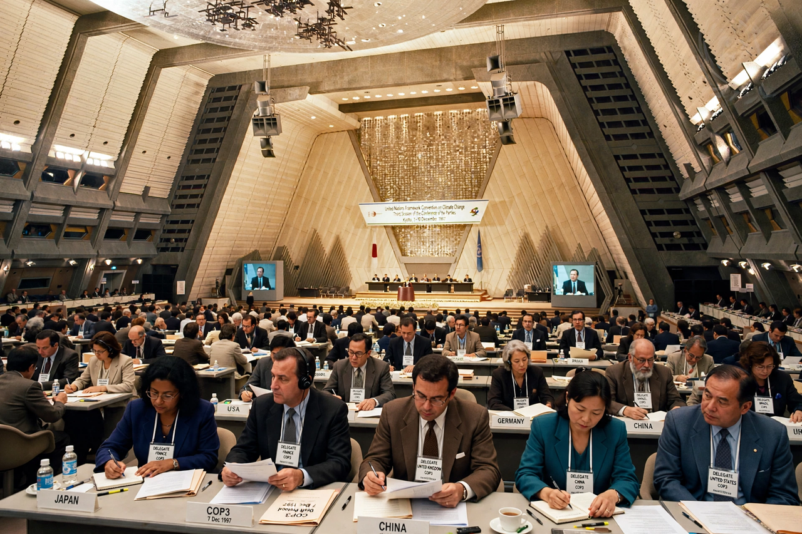

Kyoto Protocol
| Kyoto Protocol | |
|---|---|
| Signed | 11 December 1997, Kyoto |
| Effective | 16 February 2005 |
| First commitment period | 2008–2012 |
| Parties | 192 (at adoption era) |

The Kyoto Protocol was an international treaty adopted on 11 December 1997 in Kyoto, Japan, which extended the 1992 UN Framework Convention on Climate Change with legally binding emission reduction targets for developed countries. It entered into force on 16 February 2005.
Kyoto was the first treaty to set binding greenhouse gas targets, but it covered only part of global emissions, and its approach was later succeeded by the bottom-up framework of the {L('Paris_Agreement')}.
Targets and mechanisms
Under the first commitment period (2008–2012), 37 industrialised countries and the European Community committed to reduce emissions by an average of about 5 per cent below 1990 levels. Targets differed by country: the European Union accepted −8 per cent, Japan −6 per cent, while some countries were permitted increases.
To lower the cost of compliance the Protocol created flexible mechanisms: international emissions trading, the Clean Development Mechanism (credits for projects in developing countries) and Joint Implementation (credits for projects in other industrialised countries).
Participation and criticism
The United States signed but never ratified the Protocol, and Canada withdrew in 2011. Developing countries, including the then-rapidly growing emitters China and India, had no binding targets, which was the treaty's central political weakness.
The Doha Amendment established a second commitment period (2013–2020) with a smaller group of participants; it entered into force only at the end of 2020. Global emissions continued to rise through the Kyoto era, even though many participating countries met their individual targets.
Legacy
Kyoto established the machinery of carbon accounting, emissions inventories and carbon markets still in use, and its experience shaped the design of the Paris Agreement of 2015, which covers nearly all countries through nationally determined contributions. See also Climate change.
See also: Paris Agreement · Climate change · Intergovernmental Panel on Climate Change · Greenhouse gas